Fifteen bosses for the Plague Necromancer's two open servant places (the Rat King is the first), each a different idea, shape and size, mostly smaller ones (the user, November 7, 2026: 'different sizes and shapes, maybe stick to something smaller'). Looks only. In the game: /dross showcase boss_designs blightwood.
A giant died in Blightwood long ago and the forest moved in. A great bloom of Blightcaps grows out of its back, and glowing threads of mycelium hang from under the caps to its wrists and skull like a puppet's strings. Its head lolls on a broken neck, jaw hanging open, one eye socket glowing, the other sprouting mushrooms; the fungus shines through its bare ribs. It slumps against a tree like scenery until you get close, then the strings pull tight and it stands the wrong way. About 7 blocks tall to the top of its bloom.
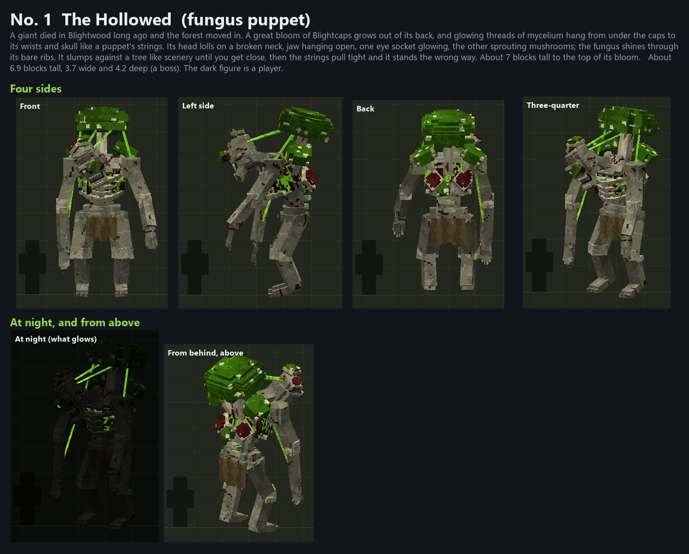
The heart of a Blightwood grove: a huge rooted puffball as wide as a house, split down its front where a glowing green heart beats behind ribs of mushroom stem, a cluster of eyes above it. Roots and glowing mycelium spread out over the ground from it to every mushroom around; a crown of tall Blightcaps grows from its top, spore pods hanging under them. Walk into a clearing of pretty glowing mushrooms and every cap turns to face you. It never moves: the grove fights for it. About 5 blocks tall and 6 across.
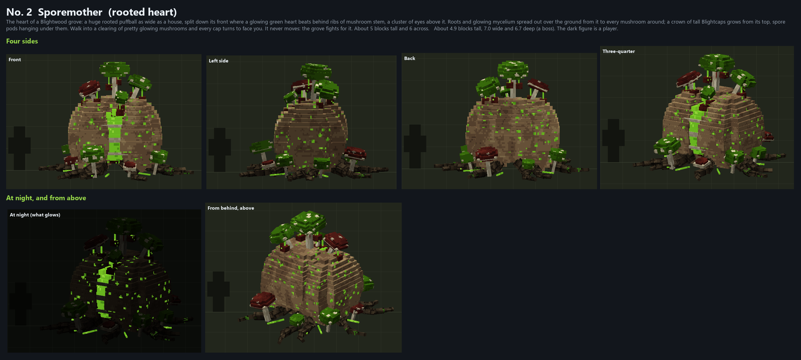
The oldest witch in Blightwood, grown huge and hunched, her crooked hut fused to her back like a snail's shell: plank walls, a sagging roof, a stovepipe puffing, a window glowing green. A cauldron of bubbling brew swings from its eaves on a chain, bottles and dried herbs rattle beside it, and she leans on a great iron ladle. Hurt one of the witches round her bog and she climbs out of the mist. Her potions you can read by their colour. About 5 blocks tall to the top of her chimney.
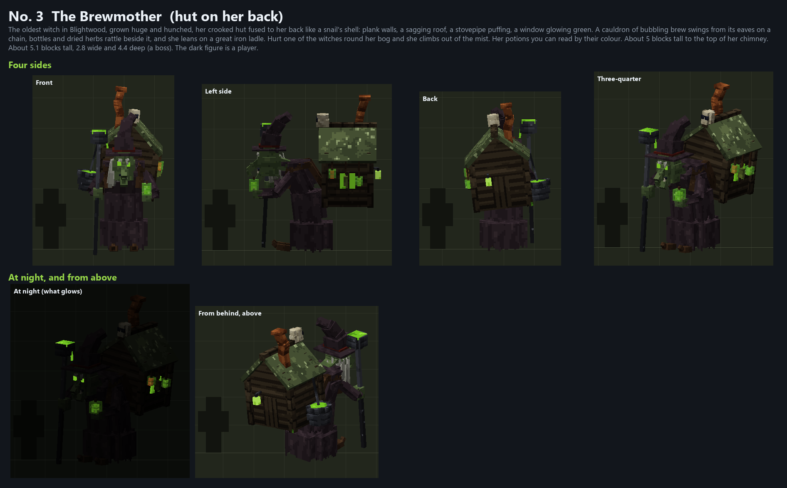
A queen fly as big as a horse, hovering low over the rot on two pairs of see-through wings: a glossy black-green body bristling with hairs, two huge red compound eyes, a crown of spines, a sucking proboscis dripping, and a vast banded belly glowing with the eggs packed inside, a cluster of them bulging out of its tip. The buzzing gets louder as you walk up to a huge rotting carcass, then she bursts out of its ribs. Squash her maggots before they hatch. About 3.5 blocks tall, hovering.
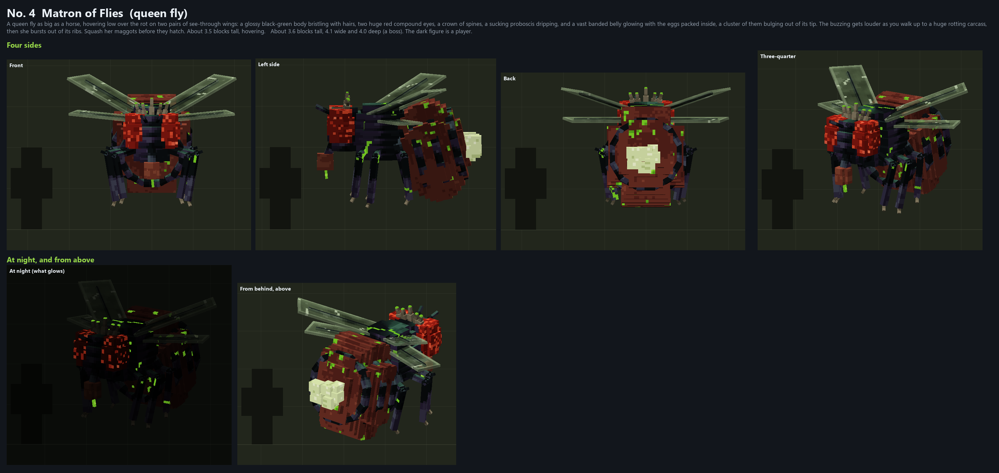
A tall scarecrow on a rotten pole in a dead field in the middle of Blightwood: a burlap sack for a head with a red stitched grin, one button eye and one hole glowing green, a sagging straw hat, a tattered coat on the crossbar with straw bursting from its sleeves, a rusty sickle in one fist. Its belly is torn open and rot and glowing ooze spill out of the straw. Three crows perch on it. Step into the field and the crows lift off and its head turns; it hops between the other scarecrows of the field. About 6 blocks tall with its pole.
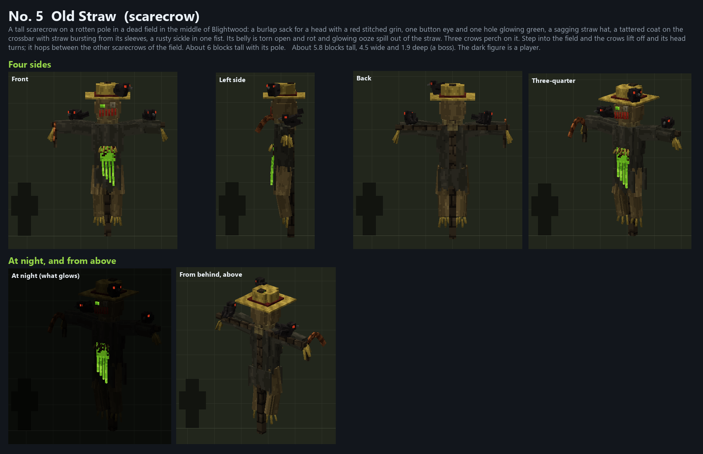
A leech as long as a boat, lying in a lazy S through the bog with its front end reared up: wet decaying-red skin striped darker down its back, rows of glowing green pores along its flanks, and at its head a round sucker of a mouth ringed with rows of teeth, glowing green deep in its throat. Its tail clings to the mud with a second sucker. It lurks under the murky water of a Blightwood pond and drains whatever wades in. About 2.5 blocks tall and 8 long.
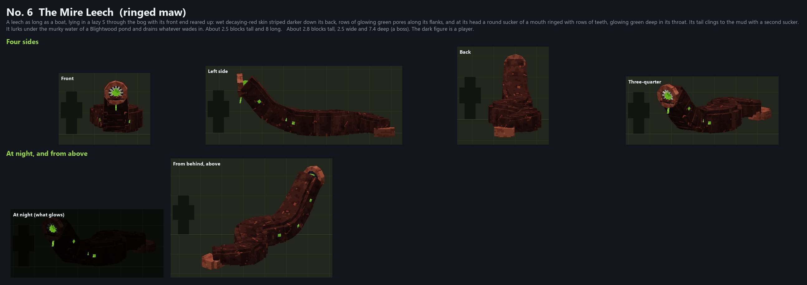
Everything that falls into Blightwood's sewers ends up in the Sump: a wobbling cube of murky green ooze you can see straight through, and floating inside it a skeleton still holding its rusty sword, a helmet, a pickaxe, gold, a rat's bones, and in the middle its one great eye, glowing, turning to follow you. A puddle of slime spreads round it. It fills a sewer tunnel wall to wall and slides after you. About 3.5 blocks tall.
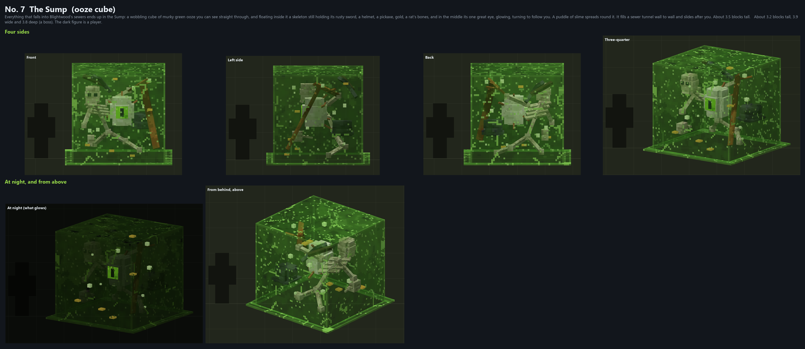
Something drowned in a Blightwood bog and swelled with plague gas until it floated: a huge round body of stretched, veined, greenish skin, a crude seam of stitches down its belly where someone tried to sew it shut, open sores hissing glowing gas, its tiny withered head and limbs dangling off it. A frayed rope ties its ankle to a mossy stone, so it bobs in one place over the fog. Pop its sores and it deflates, whizzing round the clearing. About 6 blocks tall to its head, floating.
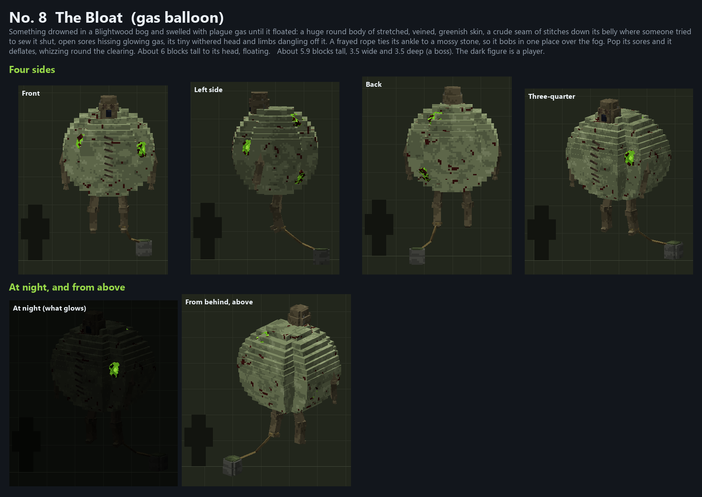
A tick the size of a cart, so swollen with blood that her body drags along the ground: a huge glossy dark-red belly stretched tight and wrinkled, a hard black shield behind her tiny head, a barbed mouth like a spear, eight short clawed legs and a brood of little ticks clinging to her back. She waits under the Gloomcaps for something warm to walk by, then latches on; her babies drop off her to bite you. About 2.5 blocks tall and 5 across.
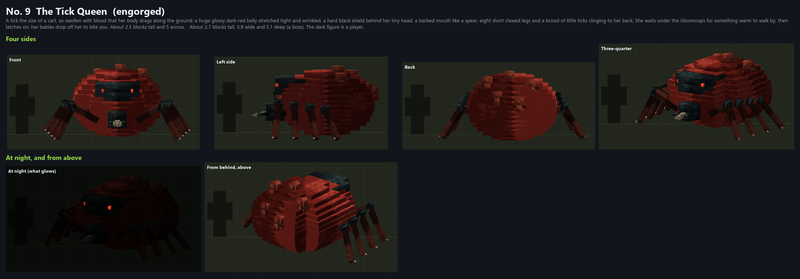
The story's true: there is an alligator in the sewers. It grew up in the dark under Blightwood, pale and blind-white, milky green eyes glowing, crooked teeth too big for its jaws, mould and little mushrooms growing along the ridges of its back, slime and weed trailing off it, and a rusted drain grate jammed round its neck from the day it crawled through one. It lurks in the green water of the sewers' big chambers. About 1.5 blocks tall and 7 long.
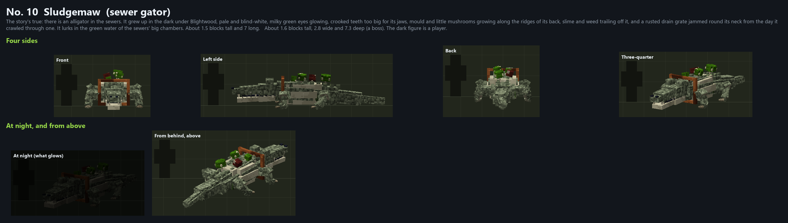
A carnivorous plant rooted in a Blightwood clearing: a great pitcher like a red-veined urn, brimming with glowing digestive ooze (a skeleton's arm hangs over its lip), its lid raised behind it, and three snapping trap-heads on thick vines swaying round it, their red maws lined with spines. Big leaves spread over the ground, a rusty helmet among them. The traps strike at anything that comes near; the pitcher swallows what they catch. About 5 blocks tall.
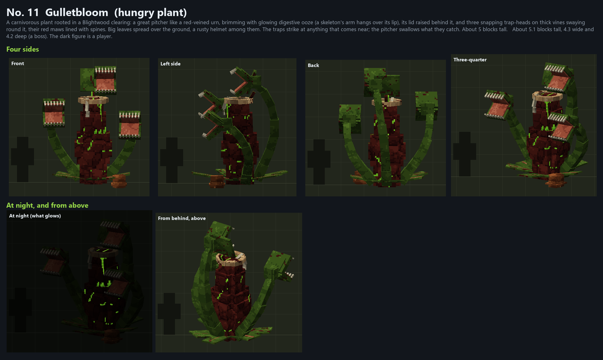
A root the size of a man, pulled up out of the black Sporeloam and very angry about it: a fat gnarled body of pale woody root covered in hairs, two forked root legs, root arms flung up, and a face of knots with a screaming hole of a mouth and deep eye sockets glowing green, a tuft of big rotting leaves on its head and clods of earth still clinging to it. Its scream is the fight: it stuns, deafens and wakes every root in the clearing. The smallest boss, about 3 blocks tall.
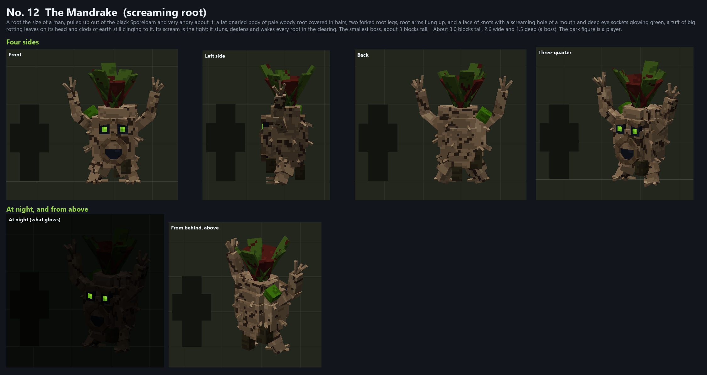
A knight who rode into Blightwood centuries ago and never left: his plate armour rusted through and furred with mould, bracket fungi growing out of his pauldrons, a cluster of Blightcaps sprouting from his great helm for a plume, green light glowing through the visor slit where his eyes were. His tabard is a rag of decaying red with a bone-white skull on it. He stands guard at a ruined shrine, both hands on the pommel of his rusted greatsword, and challenges anyone who passes. About 3.5 blocks tall.
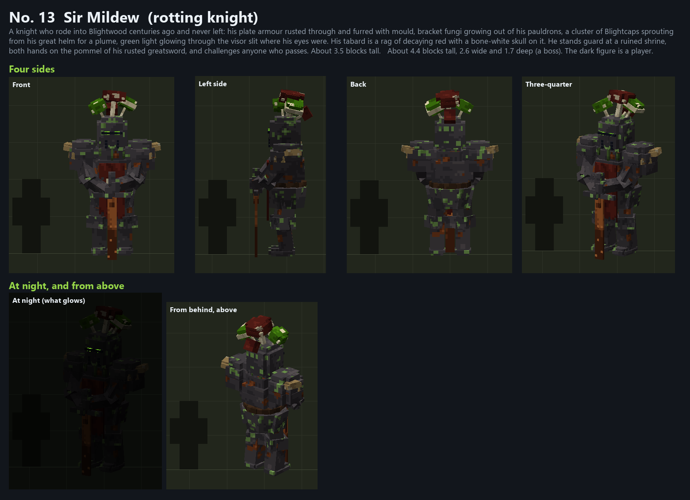
A snail the size of a wagon that has been crawling round Blightwood's old graveyard for so long it carries a piece of it: its spiral shell is bone-pale and banded, moss and mushrooms growing in its whorls, and a cracked headstone sticks up out of its top with candles burning green beside it. Its grey-green body leaves a glowing trail of slime; its eyes glow on their stalks. Slow, unstoppable, and the slime burns. About 4 blocks tall to the top of its headstone and 6 long.
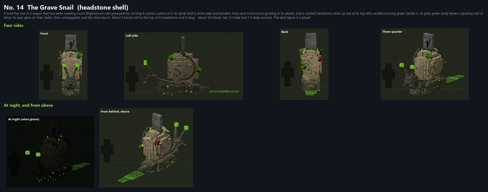
The plague's hunting dog: a hound as big as a horse, starved to the bone, its patchy hide rotted away in raw red patches, the ribs of one flank bare, bristling hackles, torn ears, a thin rat's tail and three eyes glowing green, the third in the middle of its brow. Fungus grows down its spine and it drools glowing poison. It runs down anything the Rat King's rats can't, and howls to call them. About 3 blocks tall and 5 long.
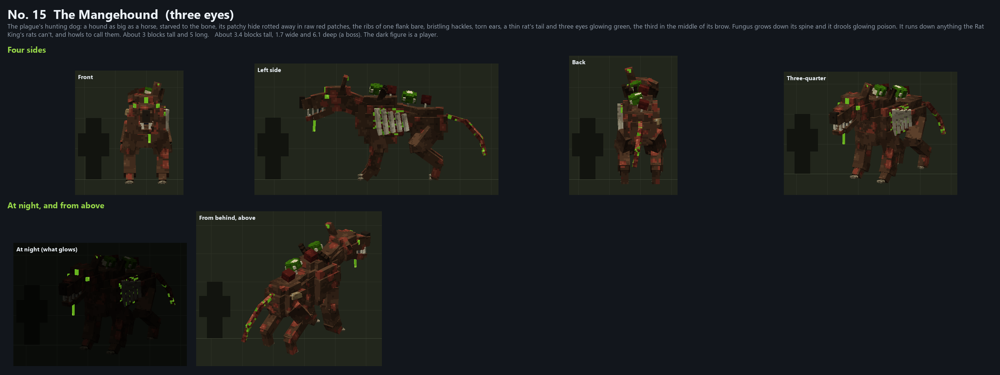